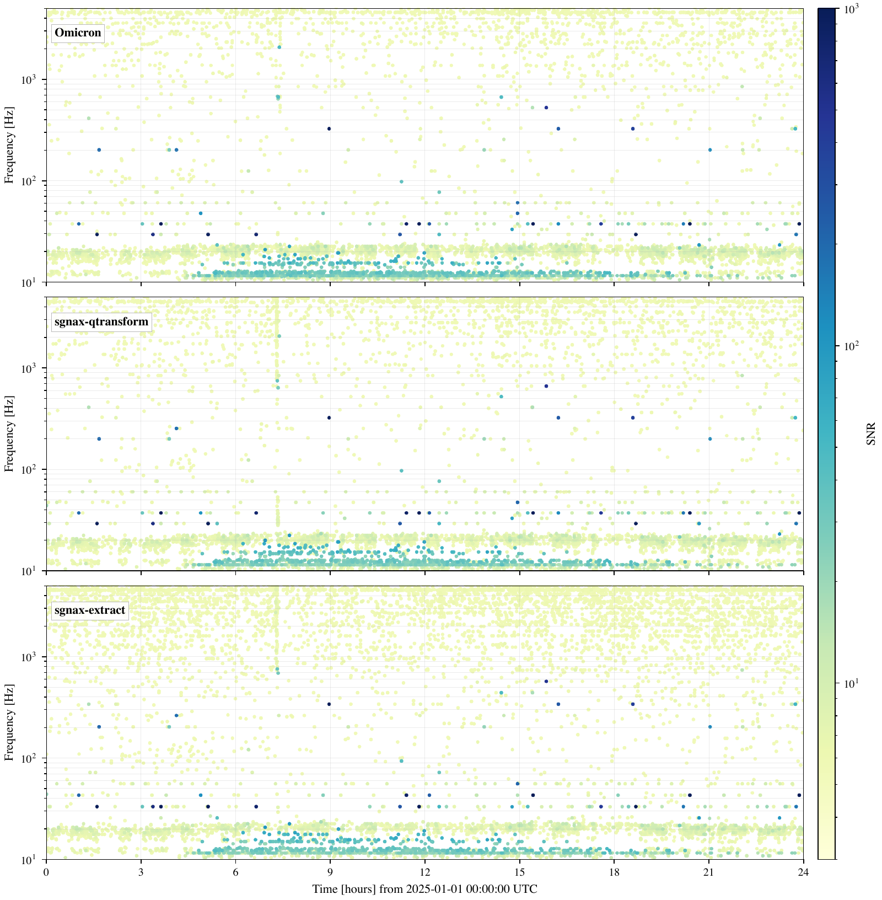
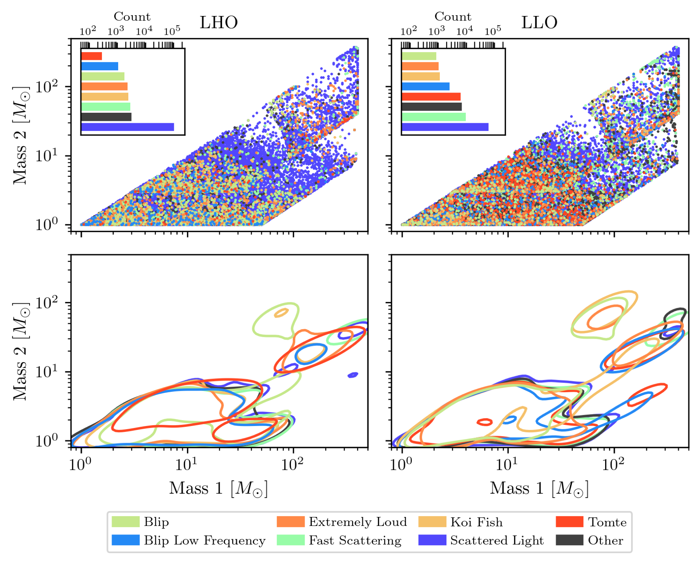

Lead developer
sgnax
Streaming matched-filter and Q-transform transient detection for strain and auxiliary channels, on CPUs and GPUs.
Research
A search judges a candidate partly by comparing it with a record of past instrumental disturbances. That record guards against false discoveries, but a disturbance that disappeared months ago can still make a real merger look unconvincing today. My research asks how searches can stay sensitive and statistically reliable as the instruments producing their data change.
I work on both sides of that problem: tools that measure detector noise as the data arrive, and studies of how that noise shows up in the search and in the significance of candidates. This matters most for multimessenger astronomy, where a faint merger has to be recognized quickly enough for telescopes to look for its light.
I lead development of sgnax, an open-source streaming pipeline for detector characterization. It runs a sine-Gaussian matched-filter search (the approach of the earlier snax) and a multi-resolution Q-transform excess-power search (the approach of Omicron) from one dataflow graph built on the Stream Graph Navigator (SGN) framework. Building on snax, I wrote nearly all of the new implementation and added the Q-transform analysis.

I also lead development of streaming replacements for other detector-characterization infrastructure: data-quality flags for rapid searches, inspiral-range monitoring, and noise subtraction using auxiliary witness channels. I validate them against the production tools through archival replay and injected signals. As deputy data-quality shift coordinator during O4, I also took part in the operational decisions about gravitational-wave candidates.
PINCH (Pipeline-Informed Noise CHaracterization) looks at glitches from the point of view of the search. A one-class support vector machine is trained on GstLAL triggers from clean data and then scores triggers that overlap glitches, which separates triggers caused by glitches from those caused by ordinary noise. Applied to the second half of O3, it shows which glitch classes reach the search, where they land in its parameter space, and how consistent that is over time.

PINCH received an honorable mention for the 2024 LIGO Laboratory Award for Excellence in Detector Characterization and Calibration. I am now extending it to environmental data, studying how ground motion at LIGO Livingston couples into the search's trigger population. So far, contamination tends to be concentrated in a few episodes, and similar ground-motion amplitudes do not always produce similar search responses.
I contribute to the development and operation of the GstLAL compact-binary search, including low-latency monitoring, candidate SNR optimization and using Virgo data for sky localization. I also contribute to its successor, sgnl, through code development and the online mock data challenges central to its review. I will be one of the primary operators of sgnl's low-latency search during the upcoming IR1 observing run. In a 40-day replay of sgnl with a production configuration, I measure how its noise model drifts across template groups. That separates the slow relaxation of the estimator from changes caused by individual disturbances.
As observing becomes longer and more continuous, a search has to tell the noise that matters for a candidate now apart from disturbances that piled up months earlier. A spring candidate can be judged against elevated scattered-light noise from the previous fall. My proposed research is to teach searches when to forget:
Lead developer
Streaming matched-filter and Q-transform transient detection for strain and auxiliary channels, on CPUs and GPUs.
Lead developer
Machine-learning package for studying how transient noise appears in the output of search pipelines.
Lead developer
Streaming data-quality flags, inspiral-range monitoring and witness-channel noise subtraction.
Contributor
Low-latency compact-binary searches and the stream-processing framework they are built on.
Contributor
Data Quality Report Builder, which automatically investigates detector data around gravitational-wave candidates.